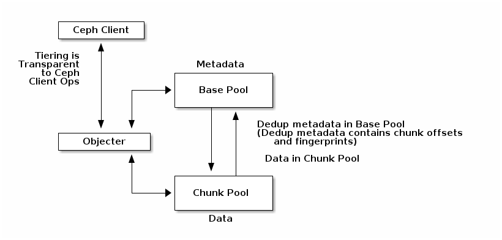

Notice
This document is for a development version of Ceph.
Deduplication
Introduction
Applying data deduplication on an existing software stack is not easy due to additional metadata management and original data processing procedure.
In a typical deduplication system, the input source as a data object is split into multiple chunks by a chunking algorithm. The deduplication system then compares each chunk with the existing data chunks, stored in the storage previously. To this end, a fingerprint index that stores the hash value of each chunk is employed by the deduplication system in order to easily find the existing chunks by comparing hash value rather than searching all contents that reside in the underlying storage.
There are many challenges in order to implement deduplication on top of Ceph. Among them, two issues are essential for deduplication. First is managing scalability of fingerprint index; Second is it is complex to ensure compatibility between newly applied deduplication metadata and existing metadata.
Key Idea
1. Content hashing (Double hashing): Each client can find an object data for an object ID using CRUSH. With CRUSH, a client knows object’s location in Base tier. By hashing object’s content at Base tier, a new OID (chunk ID) is generated. Chunk tier stores in the new OID that has a partial content of original object.
Client 1 -> OID=1 -> HASH(1’s content)=K -> OID=K -> CRUSH(K) -> chunk’s location
2. Self-contained object: The external metadata design makes difficult for integration with storage feature support since existing storage features cannot recognize the additional external data structures. If we can design data deduplication system without any external component, the original storage features can be reused.
More details in https://ieeexplore.ieee.org/document/8416369
Design

Pool-based object management: We define two pools. The metadata pool stores metadata objects and the chunk pool stores chunk objects. Since these two pools are divided based on the purpose and usage, each pool can be managed more efficiently according to its different characteristics. Base pool and the chunk pool can separately select a redundancy scheme between replication and erasure coding depending on its usage and each pool can be placed in a different storage location depending on the required performance.
Regarding how to use, please see osd_internals/manifest.rst
Usage Patterns
Each Ceph interface layer presents unique opportunities and costs for deduplication and tiering in general.
RadosGW
S3 big data workloads seem like a good opportunity for deduplication. These objects tend to be write once, read mostly objects which don’t see partial overwrites. As such, it makes sense to fingerprint and dedup up front.
Unlike cephfs and rbd, radosgw has a system for storing
explicit metadata in the head object of a logical s3 object for
locating the remaining pieces. As such, radosgw could use the
refcounting machinery (osd_internals/refcount.rst) directly without
needing direct support from rados for manifests.
RBD/Cephfs
RBD and CephFS both use deterministic naming schemes to partition block devices/file data over rados objects. As such, the redirection metadata would need to be included as part of rados, presumably transparently.
Moreover, unlike radosgw, rbd/cephfs rados objects can see overwrites. For those objects, we don’t really want to perform dedup, and we don’t want to pay a write latency penalty in the hot path to do so anyway. As such, performing tiering and dedup on cold objects in the background is likely to be preferred.
One important wrinkle, however, is that both rbd and cephfs workloads often feature usage of snapshots. This means that the rados manifest support needs robust support for snapshots.
RADOS Machinery
For more information on rados redirect/chunk/dedup support, see osd_internals/manifest.rst.
For more information on rados refcount support, see osd_internals/refcount.rst.
Status and Future Work
At the moment, there exists some preliminary support for manifest objects within the OSD as well as a dedup tool.
RadosGW data warehouse workloads probably represent the largest opportunity for this feature, so the first priority is probably to add direct support for fingerprinting and redirects into the refcount pool to radosgw.
Aside from radosgw, completing work on manifest object support in the OSD particularly as it relates to snapshots would be the next step for rbd and cephfs workloads.
How to use deduplication
This feature is highly experimental and is subject to change or removal.
Ceph provides deduplication using RADOS machinery. Below we explain how to perform deduplication.
Prerequisite
If the Ceph cluster is started from Ceph mainline, users need to check
ceph-test package which is including ceph-dedup-tool is installed.
Deatiled Instructions
Users can use ceph-dedup-tool with estimate, sample-dedup,
chunk-scrub, and chunk-repair operations. To provide better
convenience for users, we have enabled necessary operations through
ceph-dedup-tool, and we recommend using the following operations freely
by using any types of scripts.
1. Estimate space saving ratio of a target pool using ceph-dedup-tool.
ceph-dedup-tool --op estimate
--pool [BASE_POOL]
--chunk-size [CHUNK_SIZE]
--chunk-algorithm [fixed|fastcdc]
--fingerprint-algorithm [sha1|sha256|sha512]
--max-thread [THREAD_COUNT]
This CLI command will show how much storage space can be saved when deduplication
is applied on the pool. If the amount of the saved space is higher than user’s expectation,
the pool probably is worth performing deduplication.
Users should specify the BASE_POOL, within which the object targeted for deduplication
is stored. The users also need to run ceph-dedup-tool multiple time
with varying chunk_size to find the optimal chunk size. Note that the
optimal value probably differs in the content of each object in case of fastcdc
chunk algorithm (not fixed).
Example output:
{
"chunk_algo": "fastcdc",
"chunk_sizes": [
{
"target_chunk_size": 8192,
"dedup_bytes_ratio": 0.4897049
"dedup_object_ratio": 34.567315
"chunk_size_average": 64439,
"chunk_size_stddev": 33620
}
],
"summary": {
"examined_objects": 95,
"examined_bytes": 214968649
}
}
The above is an example output when executing estimate. target_chunk_size is the same as
chunk_size given by the user. dedup_bytes_ratio shows how many bytes are redundant from
examined bytes. For instance, 1 - dedup_bytes_ratio means the percentage of saved storage space.
dedup_object_ratio is the generated chunk objects / examined_objects. chunk_size_average
means that the divided chunk size on average when performing CDC---this may differnet from target_chunk_size
because CDC genarates different chunk-boundary depending on the content. chunk_size_stddev
represents the standard deviation of the chunk size.
2. Create chunk pool.
ceph osd pool create [CHUNK_POOL]
3. Run dedup command (there are two ways).
sample-dedup
ceph-dedup-tool --op sample-dedup
--pool [BASE_POOL]
--chunk-pool [CHUNK_POOL]
--chunk-size [CHUNK_SIZE]
--chunk-algorithm [fastcdc]
--fingerprint-algorithm [sha1|sha256|sha512]
--chunk-dedup-threshold [THRESHOLD]
--max-thread [THREAD_COUNT]
--sampling-ratio [SAMPLE_RATIO]
--wakeup-period [WAKEUP_PERIOD]
--loop
--snap
The sample-dedup comamnd spawns threads specified by THREAD_COUNT to deduplicate objects on
the BASE_POOL. According to sampling-ratio---do a full search if SAMPLE_RATIO is 100, the threads selectively
perform deduplication if the chunk is redundant over THRESHOLD times during iteration.
If --loop is set, the theads will wakeup after WAKEUP_PERIOD. If not, the threads will exit after one iteration.
Example output:
$ bin/ceph df
--- RAW STORAGE ---
CLASS SIZE AVAIL USED RAW USED %RAW USED
ssd 303 GiB 294 GiB 9.0 GiB 9.0 GiB 2.99
TOTAL 303 GiB 294 GiB 9.0 GiB 9.0 GiB 2.99
--- POOLS ---
POOL ID PGS STORED OBJECTS USED %USED MAX AVAIL
.mgr 1 1 577 KiB 2 1.7 MiB 0 97 GiB
base 2 32 2.0 GiB 517 6.0 GiB 2.02 97 GiB
chunk 3 32 0 B 0 0 B 0 97 GiB
$ bin/ceph-dedup-tool --op sample-dedup --pool base --chunk-pool chunk
--fingerprint-algorithm sha1 --chunk-algorithm fastcdc --loop --sampling-ratio 100
--chunk-dedup-threshold 2 --chunk-size 8192 --max-thread 4 --wakeup-period 60
$ bin/ceph df
--- RAW STORAGE ---
CLASS SIZE AVAIL USED RAW USED %RAW USED
ssd 303 GiB 298 GiB 5.4 GiB 5.4 GiB 1.80
TOTAL 303 GiB 298 GiB 5.4 GiB 5.4 GiB 1.80
--- POOLS ---
POOL ID PGS STORED OBJECTS USED %USED MAX AVAIL
.mgr 1 1 577 KiB 2 1.7 MiB 0 98 GiB
base 2 32 452 MiB 262 1.3 GiB 0.50 98 GiB
chunk 3 32 258 MiB 25.91k 938 MiB 0.31 98 GiB
object dedup
ceph-dedup-tool --op object-dedup
--pool [BASE_POOL]
--object [OID]
--chunk-pool [CHUNK_POOL]
--fingerprint-algorithm [sha1|sha256|sha512]
--dedup-cdc-chunk-size [CHUNK_SIZE]
The object-dedup command triggers deduplication on the RADOS object specified by OID.
All parameters shown above must be specified. CHUNK_SIZE should be taken from
the results of step 1 above.
Note that when this command is executed, fastcdc will be set by default and other parameters
such as fingerprint-algorithm and CHUNK_SIZE will be set as defaults for the pool.
Deduplicated objects will appear in the chunk pool. If the object is mutated over time, user needs to re-run
object-dedup because chunk-boundary should be recalculated based on updated contents.
The user needs to specify snap if the target object is snapshotted. After deduplication is done, the target
object size in BASE_POOL is zero (evicted) and chunks objects are genereated---these appear in CHUNK_POOL.
4. Read/write I/Os
After step 3, the users don’t need to consider anything about I/Os. Deduplicated objects are completely compatible with existing RADOS operations.
5. Run scrub to fix reference count
Reference mismatches can on rare occasions occur to false positives when handling reference counts for deduplicated RADOS objects. These mismatches will be fixed by periodically scrubbing the pool:
ceph-dedup-tool --op chunk-scrub
--chunk-pool [CHUNK_POOL]
--pool [POOL]
--max-thread [THREAD_COUNT]
The chunk-scrub command identifies reference mismatches between a
metadata object and a chunk object. The chunk-pool parameter tells
where the target chunk objects are located to the ceph-dedup-tool.
Example output:
A reference mismatch is intentionally created by inserting a reference (dummy-obj) into a chunk object (2ac67f70d3dd187f8f332bb1391f61d4e5c9baae) by using chunk-get-ref.
$ bin/ceph-dedup-tool --op dump-chunk-refs --chunk-pool chunk --object 2ac67f70d3dd187f8f332bb1391f61d4e5c9baae
{
"type": "by_object",
"count": 2,
"refs": [
{
"oid": "testfile2",
"key": "",
"snapid": -2,
"hash": 2905889452,
"max": 0,
"pool": 2,
"namespace": ""
},
{
"oid": "dummy-obj",
"key": "",
"snapid": -2,
"hash": 1203585162,
"max": 0,
"pool": 2,
"namespace": ""
}
]
}
$ bin/ceph-dedup-tool --op chunk-scrub --chunk-pool chunk --max-thread 10
10 seconds is set as report period by default
join
join
2ac67f70d3dd187f8f332bb1391f61d4e5c9baae
--done--
2ac67f70d3dd187f8f332bb1391f61d4e5c9baae ref 10:5102bde2:::dummy-obj:head: referencing pool does not exist
--done--
Total object : 1
Examined object : 1
Damaged object : 1
6. Repair a mismatched chunk reference
If any reference mismatches occur after the chunk-scrub, it is
recommended to perform the chunk-repair operation to fix reference
mismatches. The chunk-repair operation helps in resolving the
reference mismatch and restoring consistency.
ceph-dedup-tool --op chunk-repair
--chunk-pool [CHUNK_POOL_NAME]
--object [CHUNK_OID]
--target-ref [TARGET_OID]
--target-ref-pool-id [TARGET_POOL_ID]
chunk-repair fixes the target-ref, which is a wrong reference of
an object. To fix it correctly, the users must enter the correct
TARGET_OID and TARGET_POOL_ID.
$ bin/ceph-dedup-tool --op chunk-repair --chunk-pool chunk --object 2ac67f70d3dd187f8f332bb1391f61d4e5c9baae --target-ref dummy-obj --target-ref-pool-id 10
2ac67f70d3dd187f8f332bb1391f61d4e5c9baae has 1 references for dummy-obj
dummy-obj has 0 references for 2ac67f70d3dd187f8f332bb1391f61d4e5c9baae
fix dangling reference from 1 to 0
$ bin/ceph-dedup-tool --op dump-chunk-refs --chunk-pool chunk --object 2ac67f70d3dd187f8f332bb1391f61d4e5c9baae
{
"type": "by_object",
"count": 1,
"refs": [
{
"oid": "testfile2",
"key": "",
"snapid": -2,
"hash": 2905889452,
"max": 0,
"pool": 2,
"namespace": ""
}
]
}
Brought to you by the Ceph Foundation
The Ceph Documentation is a community resource funded and hosted by the non-profit Ceph Foundation. If you would like to support this and our other efforts, please consider joining now.